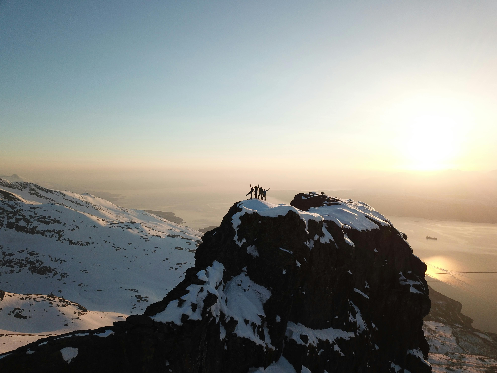
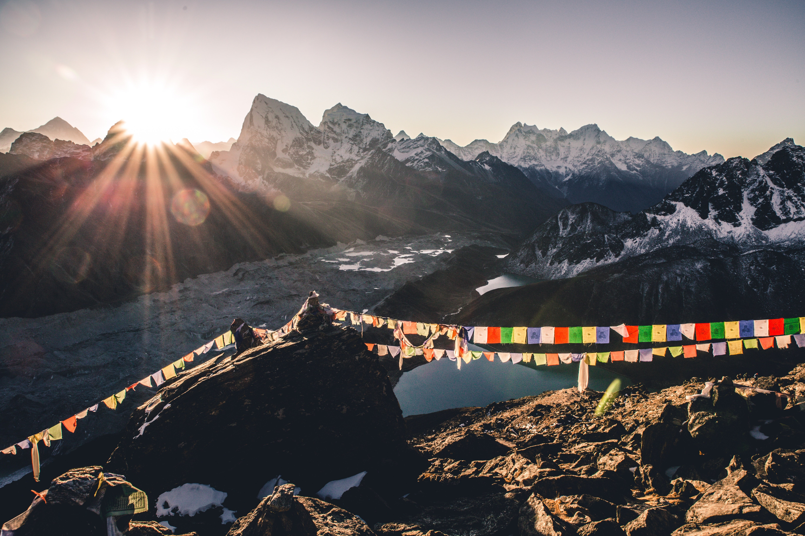
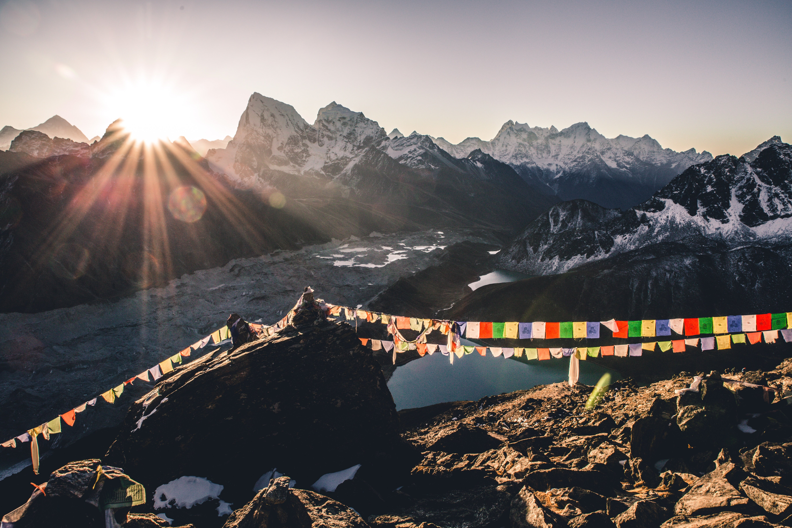
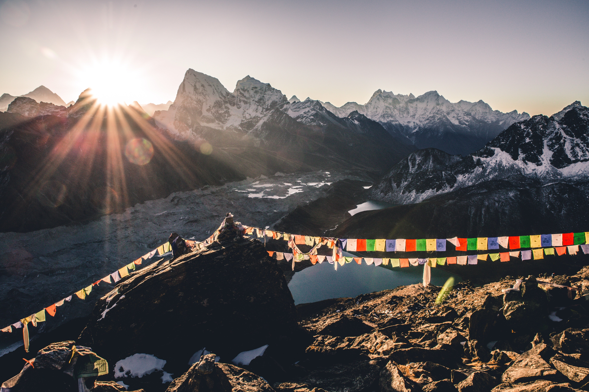

 

Hill Trek
10 Days
Trek 16 Km
Uttarakhand
The Kedarnath Yatra is a revered Hindu pilgrimage to the Kedarnath Temple, dedicated to Lord Shiva, located in the Himalayas of Uttarakhand, India. Open from late April to early November, the temple is part of the Char Dham Yatra and one of the twelve Jyotirlingas. The journey involves a 16-kilometer trek from Gaurikund, although helicopter services are also available. The trek offers stunning views of the Himalayan landscape. Despite its spiritual and historical significance, dating back over a thousand years, pilgrims must prepare for the high altitude and unpredictable weather.
